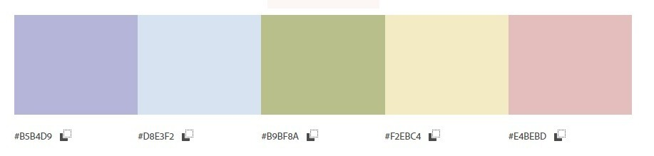
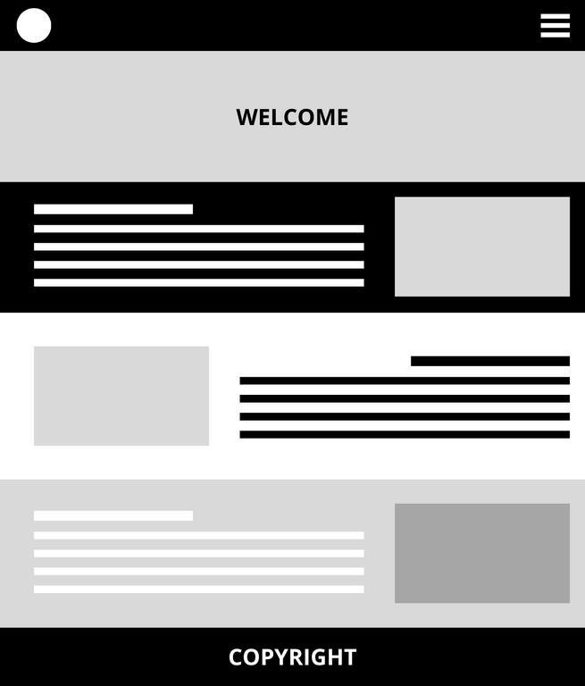
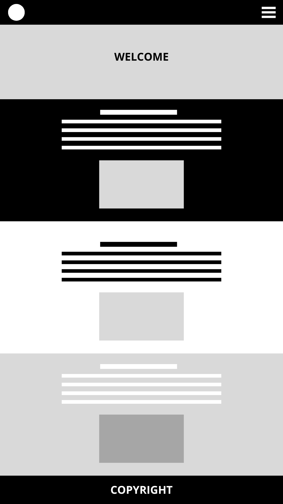

Catalina's Photography Site Plan
Site Name
"Moments by Catalina"
This name captures the essence of my photography, emphasizing the unique moments I strive to document.
Optional domain availability: momentsbycatalina.com
Site Purpose
The site serves as a showcase for my photography, providing visitors with a portfolio of my work and
information about my services. It aims to connect with potential clients and photography enthusiasts.
Scenarios
- What types of photography services does Catalina offer?
- How can I book a session with Catalina?
Color Schema
- Color 1: #B5B4D9 - Used for backgrounds and subtle elements.
- Color 2: #D8E3F2 - Used for highlights and soft accents.
- Color 3: #B9BF8A - Used for text elements and icons.
- Color 4: #F2EBC4 - Used for buttons and call-to-action sections.
- Color 5: #E4BEBD - Used for headings and accent details.

Typography
- Font 1: Times New Roman - Used for body text.
- Font 2: Georgia - Used for headings.
Wireframe
Desktop View

Mobile View
